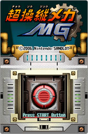
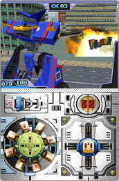
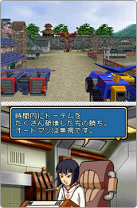
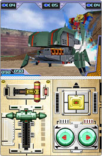

|
1970・80年代の巨大ロボットアニメを生放送で見ていた世代にとっては、かなりツボを突かれた設定のゲームといえるかもしれません。当時は番組を見終わるとダンボールを切り貼りして操作レバーやボタンの並んだパネルを不器用ながらも作って、巨大メカを操る主人公気分を味わったものです。その役割を現代ではタッチパネルが果たしてくれるとか？電源を入れると最初から気分を盛り上げてくれる開閉ハッチ付きの赤いボタンが登場。やはりここは指で直接プッシュしてゲームスタート。各地でおきるミッションをクリアすることでストーリーが進んでいきます。ミッションの内容はビルや爆弾を運搬するものから、オートマンと呼ばれる敵のメカを撃破するものまでさまざま。そしてミッションにはイージーからスーパーハードまで4段階の難度が用意されており、難度が高いほどクリア後に手に入る報酬も高くなります。こうして手に入れた資金を元手に、世界各地の工房で新しいMGを入手できるわけです。
コクピットに乗り込み、MGを操縦したときの感覚は、一言で表すなら重量感タップリ。目にも止まらないスピードで移動して敵に接近できるわけではありません。むしろその逆で、鋼鉄の塊であるMGの自重をプレイヤーが感じ取れるように地響きをたてながら一歩一歩進んでいく感じです。このあたりは独特な味付けで、ストレスを感じさせるかどうかの絶妙の移動スピードではあるのですが、むしろ巨大ロボットを操縦しているという臨場感を高めてくれます。移動スピードが遅いからこそ、それを計算に入れて敵に攻撃が当たったときの快感も大きく、不自由だからこそ自分がMGを乗りこなせているという充実感があります。またMGは長時間攻撃を続けていると動力機関がオーバーヒートをおこしてしまいます。上画面右側にある温度を示すレベルゲージが伸びてきたら、攻撃をやめて敵の攻撃をかわしつつゲージが下がるのを待つのが得策です。アクションゲームでよくある、とにかく敵に接近してひたすら力技の連続でゴリ押しではなく、攻守にメリハリをつけるのがポイントなのかと感じました。耐えに耐えて強力な必殺技で一気にトドメを刺すというのも、じつに巨大ロボットらしくていいじゃないですか。 |
ミッションによっては特定の機能を持ったMGのほうが簡単にクリアできるため、慣れないうちは複数のMGを乗り換えながらゲームを進めたほうがいいかもしれません。たまった資金をどのように使えばいいか迷っているなら、手持ちのMGではクリアが難しそうなミッションに遭遇した段階で各工房を訪ねるのがオススメです。異なるコクピットのMG達を乗り換えていくのはとても楽しいですよ。ほとんどの場合、前後左右への移動はニンテンドーDS本体の十字ボタン（左利きならABXYボタン）を使うのですが、武器や特殊能力は下画面に表示されたコックピットで操作していきます。コクピットのデザイン＝操縦方法はMGごとに大きく異なっており、この点がMGの個性をより際立たせています。強力な必殺技などはボタンを押す前にハッチを開けるワンアククションが用意されていたりして、じつに憎い演出です。色々な操縦方法をおぼえるのが大変という印象を受けるかもしれないけど、断然楽しさのほうが上回ります。むしろ慣れてくると、実生活におけるクルマの運転みたいに手元を見なくてもタッチペンでしっかり操縦できたりするんです。これが妙にうれしい。
MGはオーソドックスな人型だけではなく昆虫や動物をモチーフにしたものや、変形機能を持ったタイプなど色々なものが登場します。販売する工房ごとに特色を持っているのでミッションクリア時に新製品が入荷したらチェックしてみましょう。手に入れたMGは博物館にコレクションされ、なんとその総数は100種類以上にもなります。個人的には輪工房で手に入るMGが好みかな。変形することによって移動スピードが異なる点を戦略に生かせるのが楽しいです。複数のアイテムを装備させてMGの能力をカスタマイズすることもできるので、お気に入りのMGだけで色々なミッションに挑戦するという遊び方も悪くないですね。今月号では開発スタッフのオススメするMGを紹介しているのでインタビューも要チェック！巨大ロボットに重量感という個性的な演出を加えているのもさることながら、ニンテンドーDSの下画面全体をコクピットとして活用するアイデアによって、デザインや能力だけではなく操縦方法、それによって味わえる感覚という新しい視点で個性を表現している点には脱帽です。 |
|
|